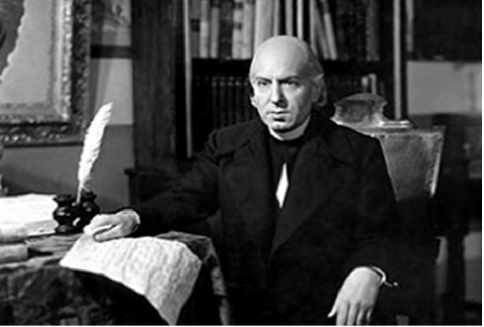
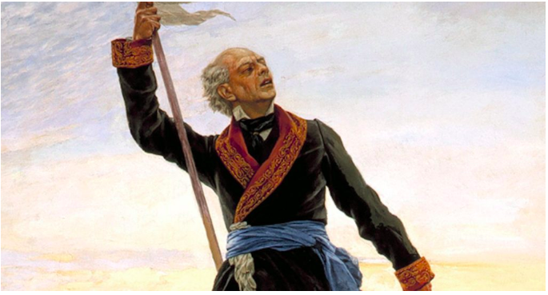

Dolores, Hidalgo.- El cura Miguel Hidalgo y Costilla, párroco de una pequeña iglesia en el Bajío mexicano rechazó la invitación que unos amigos le hicieron para ir a una peda el sábado 15, pues tiene que madrugarle el domingo.
“Me encantaría ir con ustedes, pero el domingo tengo cosas que hacer”, rechazó discretamente don Miguel, mientras tomaban unas Halls para estar bien de la garganta. A pesar de que el sábado es ‘Noche Novohispana’, el cura explicó cordialmente la invitación a pesar de no explicar cuales ‘asuntos’ tendría que atender el domingo muy temprano.
Cercanos a Hidalgo están preocupados por la salud de él ya que últimamente se le ha visto muy misterioso juntándose con personas extrañas en los callejones de Dolores, y haciéndose saludos como si fueran miembros de ‘los Magios’. “El otro día lo vi enojado y hablando solo en la capellanía de la parroquia, como si le estuviera hablando a muchas personas”, explicó su ‘sobrina
La población dolorense espera desvelarse y pasársela bien el sábado 15 y confía en que nadie hará ningún escándalo con las campanas de la Iglesia que los pudiera levantar…
“Yo voy a ponerme hasta la madre el sábado. Que ni se le ocurra a nadie levantarme el domingo antes de la 1 de la tarde”, amenazó un gordo local